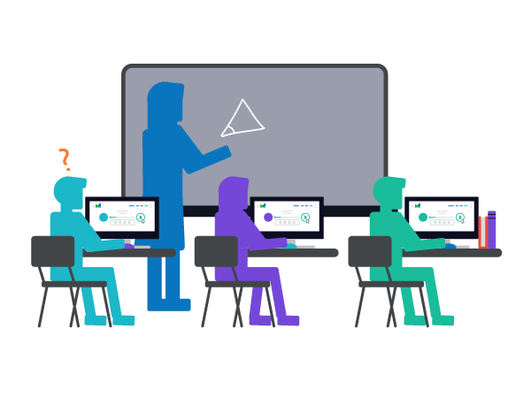

Gender Recognition By Voice
" A Baby learns to crawl, walk and then run. We are in the crawling stage when it comes to applying machine learning. Take control of your goals. Congratulations on taking a forward step to get in shape and feel great ""
